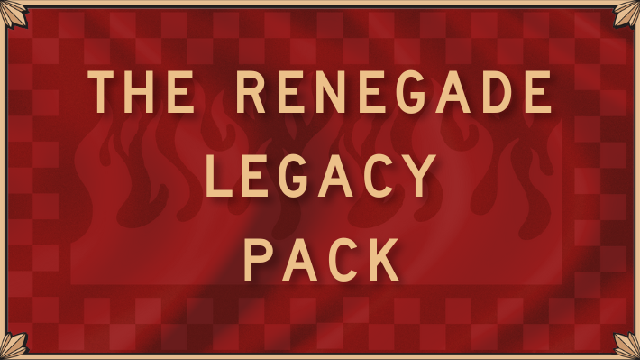

The Renegade Legacy Pack is a set of Army lists and rules tweaks for the beloved Legacy (aka Renegade) factions for Old World. The goal of this project is to simply bring the Legacy factions up to a similar quality as the Grand Armies of the Core factions.
These rules are free to use in conjunction with the official Old World Legacy Army PDFs and are intended to be used in any situation where Old World games are played. You may use them in whole, use them in part, use them as inspiration for your own modifications, or ignore them entirely.
For updates and discussion you can watch us on Youtube or via our Facebook page.
To submit feedback or to ask us a question - please use this form.
Please click one of the buttons below to download the latest version of the Pack.
And as always:
Stay Bassed!
Last updated: Friday, September 19th, 2025